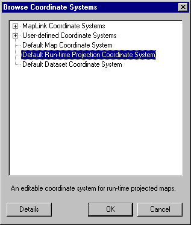

The facility to apply coordinate system information at runtime is currently only available for vector maps.
To apply coordinate system information at runtime:
Select Map | Output Coordinate System
Click Select...

Select the 'Default Runtime Projection Coordinate System' and Click OK
Once this is done, the Map Projection and Details pages for the Coordinate System cannot be edited. However, the Datum page is still editable and the selection made there is used as the reference datum. If it is known that a particular datum will be used at runtime, this should be selected since a datum transform can then be avoided, significantly improving performance. If the datum to be used at runtime is not known, then it is recommended that WGS-84 be used (the system will automatically default to this selection).
To edit the datum, please see Viewing/ Editing the current Coordinate System
Maps intended to be Runtime Projected must use the Default Runtime Projection Coordinate System. Although new coordinate systems can be created from the default, MapLink Pro Studio uses the ID of the Default Runtime Projection Coordinate System to set the map layer types, so if a different coordinate system is used the map's layers are not marked as Runtime Projection layers and hence the map cannot be reprojected at runtime.